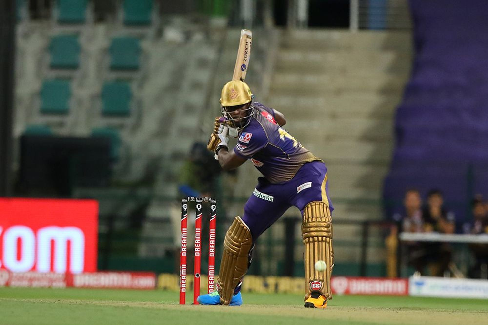
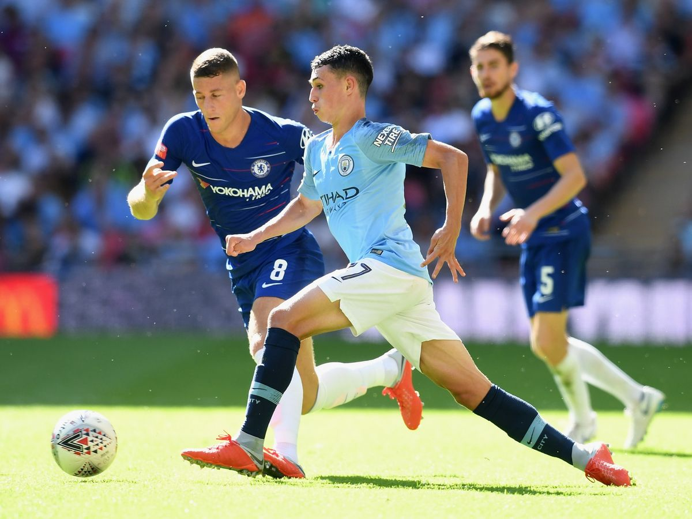

Crew and Soccer!
Cricket and Soccer!
 Favorite Teams: KKR and Man City, respectively!
Image sources: https://www.sportsindiashow.com/wp-content/uploads/2020/10/Dre.jpg,https://www.manchestereveningnews.co.uk/sport/football/football-news/man-city-guardiola-foden-chelsea-14993839